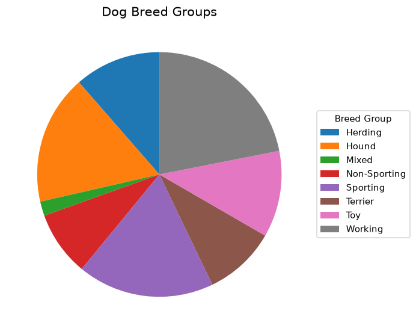
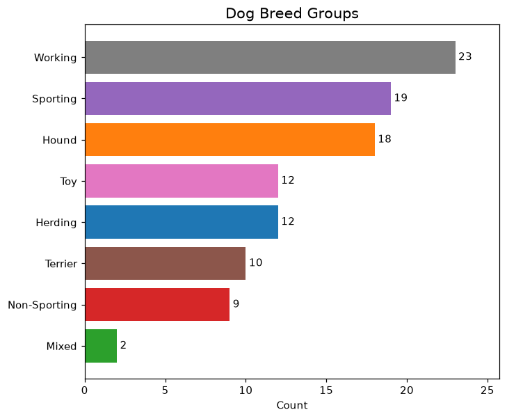

Lesson 5 - Bar Charts
At the end of this lesson, you will be able to:
- Create bar charts to visualize one column of data.
- Explain why a bar chart is usually easier to read than a pie chart.
Bar chart
The first visualization we'll learn is the bar chart. Look at figure 8.10 below - which of these questions can it answer?
- What is the most common maximum lifespan of a dog?
- What approximate % of dogs live between a maximum of 12 - 14 years?
- What is the fluffiest breed of dog?
- What is the shortest maximum lifespan of a dog?
- How long will my dog live?
- What is the longest maximum lifespan of a cat?
Show Solution
Questions 1, 2, and 4 can be answered with the graph.
- The most common lifespan of a dog is 15 years. Look for the tallest bar - it sits at position 15 on the x-axis - then read across to the y-axis: a count of 25 dogs.
- Add up all of the counts and you get 105 - there are 105 dogs in the dataset. Add up just the bars for 12, 13, and 14 years and you get 22 + 13 + 23 = 58. Divide 58 by 105 to find the percentage: 58 / 105 = .5524 or ~ 55%.
- The shortest maximum lifespan is 8 years. The longest is 20 years.

Information from bar charts
A bar chart looks at the values in a single column. Here's what it can tell you:
- What value(s) are most common in this column?
- What value(s) are least common in this column?
- What is the unique list of values in this column?
Max Life Span
Open this Colab Notebook and make a copy. Follow the instructions to download the dogs.csv file and upload it into the Notebook. Run each code block in order from top to bottom to plot the bar chart.
What questions does the graph in the notebook answer? Think in mathematical terms (percents, counts, averages, ranges, &c.) and units of measurement (percents, counts, money, prediction scores, &c.)
Show Solution
Here are a few examples:
- 25 dog breeds have a maximum life span of 15 years.
- The shortest maximum life span for a dog is 8 years.
- 25/105 or ~24% of dogs have a maximum life span of 15 years.
- 83/105 or ~79% of dogs have a maximum life span between 12 and 15 years.
Notice how every one of these uses actual numbers - that's the habit to build. Instead of thinking "It looks like not very many dogs have a life span of 15 years." (not a mathematical term in sight), try "Only 24% of dogs have a maximum life span of 15 years."
Breed Group
Now swap the column from 'Max Life Span' to 'Breed Group'. Change the labels to match and run it again. What questions does this new graph answer? Same drill: think in mathematical terms (percents, counts, averages, ranges, &c.) and units of measurement (percents, counts, money, prediction scores, &c.)
Show Solution
Here are a few examples:
- 10% of breeds in this sample are Terriers.
- Working dogs are the largest breed group.
- Mixed breeds have the lowest count of 2 dogs within the breed group.
Sorting order
Compare the two breed-count charts below - which one do you prefer, and why?

Either order can serve a purpose, but the graph on the right makes comparison easier. It sorts counts in descending order rather than alphabetically by breed group, so the largest and smallest groups are immediately visible.
In the notebook, the bar order is controlled by the order= argument inside sns.countplot(). You can change how the bars are sorted by changing just that one argument:
- To sort by the category name (alphabetical):
order=sorted(df['Breed Group'].dropna().unique()) - To sort by count, tallest bar first:
order=df['Breed Group'].value_counts().index
Try switching between the two and run the cell again, noticing how the bar order changes. Compare the two sortings. Which do you prefer? Why?
Calculating the sum or average of a column
A bar chart can also represent one column and - instead of counts - display the sum or mean (average) per dog breed. Say, for example, we want to know the average max weight for dog breeds:

Open this Colab notebook to see the code that creates the chart above. Make a copy, then change the column name to find the average of other columns - and remember to change the labels to match!
What about pie charts?
You've almost certainly seen a pie chart - a circle sliced up so each slice is one category, and the size of the slice shows how big that category is. They're everywhere, and at first glance a pie seems like a natural fit for breed groups: each slice is one group, and together they make up the whole dataset. So let's try it. Here are the exact same breed-group counts you just saw, drawn as a pie:

Try it! Using only the pie chart above, put the breed groups in order from largest to smallest. Which group is the biggest? Which is the smallest? And can you tell which two groups are exactly tied?
Show Solution
The largest slice (Working) and smallest (Mixed) are reasonably clear, but the middle becomes a guessing game. Is Sporting bigger than Hound, or the other way around? Two groups are exactly tied, yet the pie makes that difficult to see. A pie asks our eyes to compare angles and areas, which people judge less accurately than aligned lengths.
Now look at the same data as a bar chart:

The comparison is now direct. Working (23) is the largest group and Mixed (2) the smallest, and Toy and Herding are visibly tied at 12 each. A bar chart lines every value up against a common axis, so we compare lengths and positions rather than angles.
This is why bar charts are usually the better choice for comparing categories. Questions such as which is largest, which is smallest, and how two values compare are easier to answer against a shared axis. A useful rule of thumb is: when a pie chart is possible, first check whether a bar chart communicates the comparison more clearly.
(Pie charts aren't never useful. If you have just two or three categories and one clearly dominates - "75% of the budget went to rent" - a pie can make that point fine. But that is about the only time a pie beats a plain bar.)
One last teaser: in the next lesson we'll learn what to do when a column has too many distinct values for a bar chart to handle. See for yourself - change the column in the original bar chart notebook to display 'Max Weight'. Is this an easy chart to read?